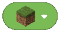
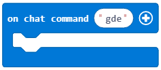
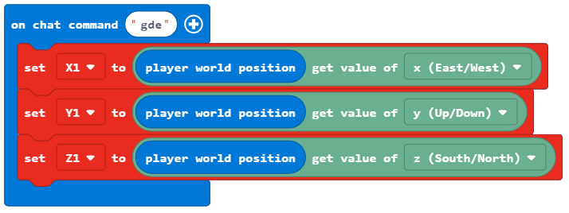
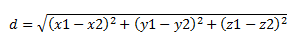
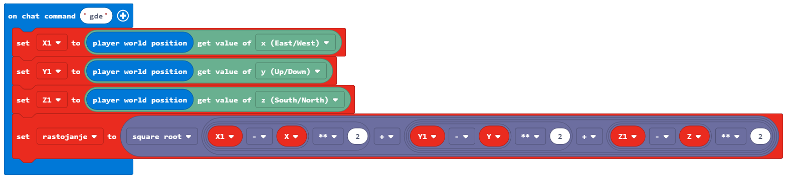
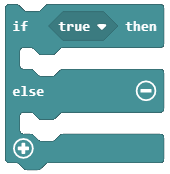

Задача-Топло и студено¶
Подобно на вас, и програмите вземят решения. Всички създадени досега програми бяха линейни-командите в тях се изпълняваха последователно, една след друга, до края на програмата. За разлика от тях, в които всяка стъпка, всяка команда, се изпълнява еднократно, в алгоритмите, способни да взимат решение, условните алоритми, някои от командите ще се изпълнят, други-не, което ще зависи от това дали условието се е сбъднало или не.
Ще демонстрираме този принцип, програмирайки играта Топло и студено. Спрямо позицията на героя, ще се появява съобщение колко е далеч от обект някъде в света. Ако героят е близо, думата Топло ще се изпише, но ако е далеч-Студено. Ако е много близо, ще се появи думата Горещо, а ако е много далеч-думата Ледено.
Етап 1.
Нека помислим за решението: Да определим дестинцията на героя до обект, според която ще получим желаното съобщение.
Етап 2.
Отворете Code Builder (натискайки C); ще се появи прозорец за редактиране, където ще можете да трупате блокове.
В самото начало ще определим обекта и мястото му в света на Minecraft, което ще направим в статовия блок. Нека координатата Х има случайна стойност от 0 до 600, а останалите две координати имат стойности Y и Z.
За да осъществим това, ще създадем променливите X, Y, Z (съхраняват координатите на обекта) и Block (съхранява обекта). Също така трябва и да нагласим началната стойност за променливите, които създадохме.
В блока  ще определим позицията и типа на обекта, влачейки блоковете в следната последователност:
ще определим позицията и типа на обекта, влачейки блоковете в следната последователност:
ще определим координатата х в променливата Х, която ще придобие случайна стойност в интервала от 0 до 600 чрез блока
 .
.ще определим координатата y в променливата
Y, която ще придобие стойността y, координатите на позицията на играча в света. Това се постига с блока от категория
от категория  , където ще поставим променливата
, където ще поставим променливата Yвместо променловата позиция, и блокът от категория .
от категория .ще определим координатата z в променливата
Z, която ще придобие стойността z, координатите на позицията на играча в света. Това се постига с блока от категория , където ще поставим променливата
от категория , където ще поставим променливата Zвместо променливата позиция, и блокът от категория .ще определим къде да бъде поставен обекта чрез блока  от блока
 .
.
{kind=link}
{kind=link}
Блокът след определяне на променливите:

След като променливите са определени, ще завлечем блока, който физически ще постави обекта някъде в играта.
Затова използваме блока  от категория . Този блок има два аргументни блока, в първия аргументен блок трябва да завлечем променливата
от категория . Този блок има два аргументни блока, в първия аргументен блок трябва да завлечем променливата  , а във втория да поставим координатите|X|,
, а във втория да поставим координатите|X|,  и
и  за да дефинираме позицията на обекта използвайки блока
за да дефинираме позицията на обекта използвайки блока  от категория .
от категория .
Модифицираният код:

Така сме определили местоположението на обекта в Minecraft. Ако искаме да видим координатите му, можем да използваме блока  . За да покажем тази информация използваме блока
. За да покажем тази информация използваме блока  от субкатегория
от субкатегория  of the category
of the category  .
.
Програмата след добавянето на този блок:

Следващата ни стъпка ще бъде да завлечем блоковете,които ще използваме да определим разстоянието между обекта поставен в света и играча, в блока . Това ще стане като определим променливите, които ще съхранят позицията на героя, т.е. ще съхранят координатите x, y, z на героя. Индивидуалните координати са получени чрез блоковете и  .
.
WeСъздаваме променливите X1, Y1 и Z1 и им даваме стойностите на координатите на героя:
За да изчислим разстоянието между героя и обекта, ще използваме формулата от математиката за определяне на дистанцията в триизмерни пространства между две точки A (x1, y1, z1) и B(x2, y2, z2):
Създаваме променливата distance, даваме и стойността, получена чрез формулата.
В MakeCode математическите операции се намират в категорията . Ще конструираме споменатата формула като добавим подходящите блокове (+, -, и умножение на квадрат **, както и корен квадратен):

Обновеният код:
След като имаме стойността на променливата distance, можем да изпълним играта си Топло и Студено.
Според това колко е далече героят от обекта, Minecraft информира потребителя чрез кратки съобщения като Топло, Студено, Горещо и Ледено. Според задачата:
Based on the setup of the task:
Ако разстоянието е повече от 100 блока, програмата ще каже Ледено.
Ако разстоянието е повече от 50 блока, програмата ще каже Студено.
Ако радстоянието е повече от 25 блока, съобщението ще бъде Топло.
Ако разстоянието е повече от 12 блока, ще бъде изписано съобщението Горещо.
Ако разстоянието до обекта е 0, то съобщението ще бъде Намерено.
Ще използваме блока  и сравнителните оператори (> и =) от категорията . Ще добавим разклонения като натиснем знака +. Видът на кода след тези блокове:

Крайната програма за играта Топло и студено:

Етап 3
Тестване на програмата:
Натиснете бутона  .
.
Ще започнем чата, натискайки бутона Т на клавиатурата, ще въведем думата where (kъдe), която ще задейства програмата.